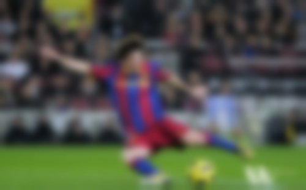

Image Pyramids
Goal
In this chapter,
- We will learn about Image Pyramids
- We will use Image pyramids to create a new fruit, “Orapple”
- We will see these functions: cv2.pyrUp(), cv2.pyrDown()
Theory
Normally, we used to work with an image of constant size. But in some occassions, we need to work with images of different resolution of the same image. For example, while searching for something in an image, like face, we are not sure at what size the object will be present in the image. In that case, we will need to create a set of images with different resolution and search for object in all the images. These set of images with different resolution are called Image Pyramids (because when they are kept in a stack with biggest image at bottom and smallest image at top look like a pyramid).
There are two kinds of Image Pyramids. 1) Gaussian Pyramid and 2) Laplacian Pyramids
Higher level (Low resolution) in a Gaussian Pyramid is formed by removing consecutive rows and columns in Lower level (higher resolution) image. Then each pixel in higher level is formed by the contribution from 5 pixels in underlying level with gaussian weights. By doing so, a \(M \times N\) image becomes \(M/2 \times N/2\) image. So area reduces to one-fourth of original area. It is called an Octave. The same pattern continues as we go upper in pyramid (ie, resolution decreases). Similarly while expanding, area becomes 4 times in each level. We can find Gaussian pyramids using cv2.pyrDown() and cv2.pyrUp() functions.
img = cv2.imread('messi5.jpg') lower_reso = cv2.pyrDown(higher_reso)
Below is the 4 levels in an image pyramid.

Now you can go down the image pyramid with cv2.pyrUp() function.
higher_reso2 = cv2.pyrUp(lower_reso)
Remember, higher_reso2 is not equal to higher_reso, because once you decrease the resolution, you loose the information. Below image is 3 level down the pyramid created from smallest image in previous case. Compare it with original image:
Laplacian Pyramids are formed from the Gaussian Pyramids. There is no exclusive function for that. Laplacian pyramid images are like edge images only. Most of its elements are zeros. They are used in image compression. A level in Laplacian Pyramid is formed by the difference between that level in Gaussian Pyramid and expanded version of its upper level in Gaussian Pyramid. The three levels of a Laplacian level will look like below (contrast is adjusted to enhance the contents):

Image Blending using Pyramids
One application of Pyramids is Image Blending. For example, in image stitching, you will need to stack two images together, but it may not look good due to discontinuities between images. In that case, image blending with Pyramids gives you seamless blending without leaving much data in the images. One classical example of this is the blending of two fruits, Orange and Apple. See the result now itself to understand what I am saying:

Please check first reference in additional resources, it has full diagramatic details on image blending, Laplacian Pyramids etc. Simply it is done as follows:
- Load the two images of apple and orange
- Find the Gaussian Pyramids for apple and orange (in this particular example, number of levels is 6)
- From Gaussian Pyramids, find their Laplacian Pyramids
- Now join the left half of apple and right half of orange in each levels of Laplacian Pyramids
- Finally from this joint image pyramids, reconstruct the original image.
Below is the full code. (For sake of simplicity, each step is done separately which may take more memory. You can optimize it if you want so).
import cv2 import numpy as np,sys A = cv2.imread('apple.jpg') B = cv2.imread('orange.jpg') # generate Gaussian pyramid for A G = A.copy() gpA = [G] for i in xrange(6): G = cv2.pyrDown(G) gpA.append(G) # generate Gaussian pyramid for B G = B.copy() gpB = [G] for i in xrange(6): G = cv2.pyrDown(G) gpB.append(G) # generate Laplacian Pyramid for A lpA = [gpA[5]] for i in xrange(5,0,-1): GE = cv2.pyrUp(gpA[i]) L = cv2.subtract(gpA[i-1],GE) lpA.append(L) # generate Laplacian Pyramid for B lpB = [gpB[5]] for i in xrange(5,0,-1): GE = cv2.pyrUp(gpB[i]) L = cv2.subtract(gpB[i-1],GE) lpB.append(L) # Now add left and right halves of images in each level LS = [] for la,lb in zip(lpA,lpB): rows,cols,dpt = la.shape ls = np.hstack((la[:,0:cols/2], lb[:,cols/2:])) LS.append(ls) # now reconstruct ls_ = LS[0] for i in xrange(1,6): ls_ = cv2.pyrUp(ls_) ls_ = cv2.add(ls_, LS[i]) # image with direct connecting each half real = np.hstack((A[:,:cols/2],B[:,cols/2:])) cv2.imwrite('Pyramid_blending2.jpg',ls_) cv2.imwrite('Direct_blending.jpg',real)
Additional Resources
Exercises